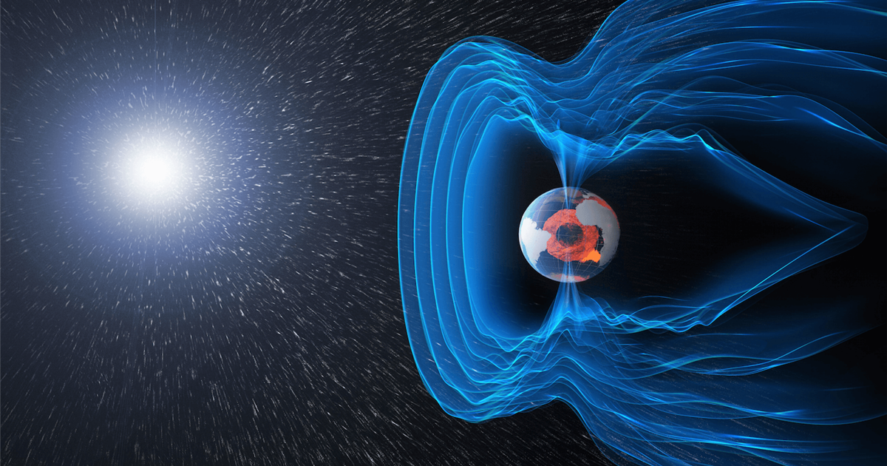
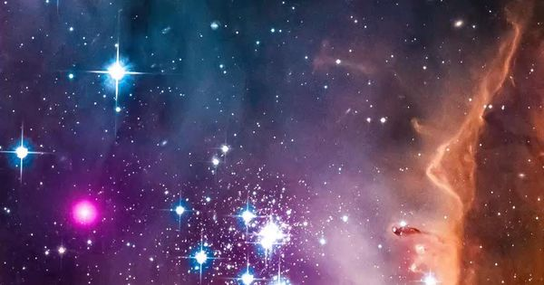
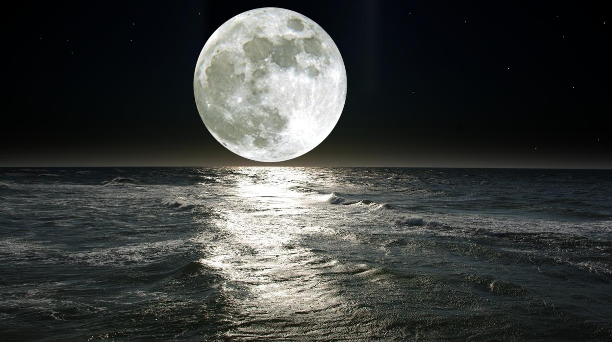
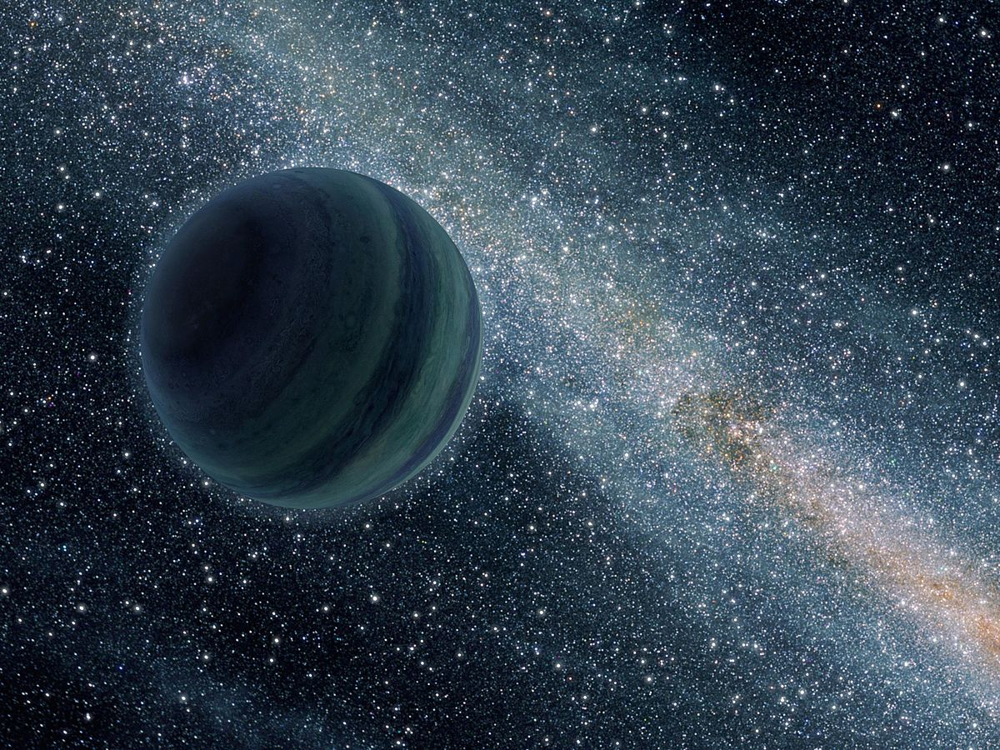
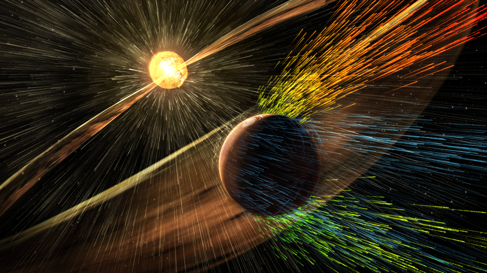
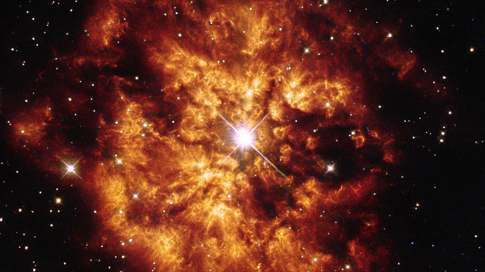

El espacio exterior es un lugar lleno de misterios y maravillas que fascinan a científicos y amantes del universo por igual. Aquí te presentamos siete curiosidades sorprendentes que probablemente no conocías:
1. El espacio no está completamente vacío
Aunque parezca un vacío absoluto, el espacio contiene partículas minúsculas, radiación cósmica y campos magnéticos que viajan por el universo.
2. El universo tiene un color
El color promedio del universo, determinado por la luz emitida por estrellas y galaxias, es un beige muy claro llamado “cosmic latte”.
3. La luna se aleja de la Tierra
Cada año, la Luna se aleja de la Tierra aproximadamente 3.8 centímetros debido a las fuerzas gravitacionales y de marea.
4. Hay un planeta hecho de diamante
El exoplaneta 55 Cancri e está compuesto en gran parte por carbono en forma de diamante y grafito, ¡un planeta literalmente brillante!
5. La radiación cósmica puede cambiar tu ADN
Los astronautas en el espacio están expuestos a radiación que puede alterar el ADN y aumentar el riesgo de problemas de salud.
6. Las estrellas de neutrones son extremadamente densas
Una estrella de neutrones tiene tanta masa que una cucharadita de su materia pesaría alrededor de mil millones de toneladas.

7. El universo está en expansión acelerada
Gracias a la energía oscura, el universo se expande cada vez más rápido, alejando galaxias unas de otras a velocidades increíbles.
El espacio exterior nunca deja de sorprendernos, y cada descubrimiento abre la puerta a nuevos misterios por resolver.